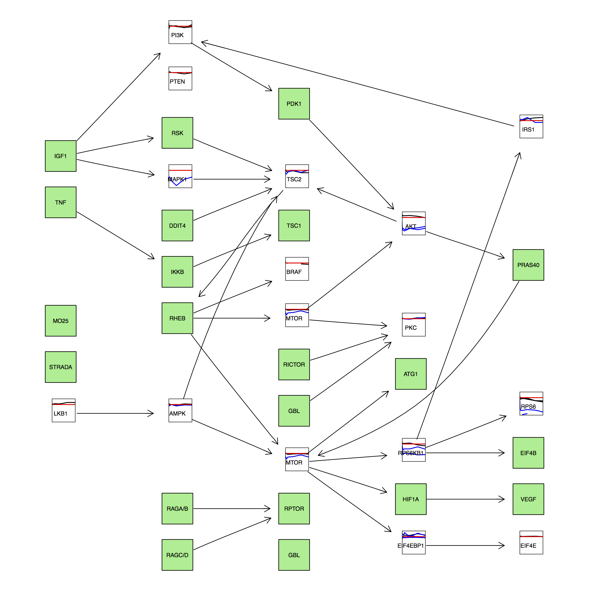

The igraph package has parsers for reading in most of the general file formats for networks. Let’s load in the Karate network from Network Example Data. It’s in GML format, so we’ll need to specify that when we use read_graph().
karate <-set.vertex.attribute(karate, "name",
value=c("Chloe", "Emily", "Aaliyah", "Emma",
"Jennifer", "Olivia", "Hannah",
"Jessica", "Sarah", "Lily", "Charlotte",
"Elizabeth", "Abigail", "Rebecca",
"Samantha", "Jacob", "Muhammad", "Shawn",
"Aaron", "Daniel", "Jonah", "Alex",
"Michael", "James", "Ryan", "Jordan",
"Alexander", "Ali", "Tyler", "Kevin",
"Jack", "Ethan", "Luke", "Harry"))
#V() is a way to programmatically access vertices (or nodes) for igraphV(karate)
## + 34/34 vertices, named:
## [1] Chloe Emily Aaliyah Emma Jennifer Olivia Hannah
## [8] Jessica Sarah Lily Charlotte Elizabeth Abigail Rebecca
## [15] Samantha Jacob Muhammad Shawn Aaron Daniel Jonah
## [22] Alex Michael James Ryan Jordan Alexander Ali
## [29] Tyler Kevin Jack Ethan Luke Harry
#layout example from https://rulesofreason.wordpress.com/2012/11/05/network-visualization-in-r-with-the-igraph-package/plot.igraph(karate, layout=layout.fruchterman.reingold, # the layout method. see the igraph documentation for detailsmain='Karate Friends!', #specifies the title#vertex.label.dist=0.5, #puts the name labels slightly off the dotsvertex.label.color='black', #the color of the name labelsvertex.label.font=1, #the font of the name labelsvertex.label=V(karate)$name, #specifies the labels of the vertices. in this case the 'name' attribute is usedvertex.label.cex=0.75, #specifies the size of the font of the labels. can also be made to varyvertex.size=degree(karate)*1.5, #make node size proportional to number of connectionsedge.arrow.size=2
)
Some properties are automatically mapped, such as V(graph)$color or E(graph)$color. If you add a new attribute, you’ll need to map this to a plotting property in plot.igraph()
Remember, that after changing graph properties, such as node size, you need to run your layout_ function again.
#setting node properties#can also use set.vertex.attributes() here
newKarate <-karate
faction <-c(1, 1, 1, 1, 1, 1, 1, 1, 2, 2, 1, 1, 1, 1, 2, 2, 1, 1, 2,
1, 2, 1, 2, 2, 2, 2, 2, 2, 2, 2, 2, 2, 2, 2)
V(newKarate)$color <-faction
#Set edge attributes using E(accessor)#can pass a named list for each node as well#You can also use set.edge.attributes() hereE(newKarate)$color <- "red"#Here we instantiate a weight vector using sample
weightvec <-sample(c(1,2,3,4), length(E(newKarate)), replace =TRUE)
#Name each edgenames(weightvec) <-E(newKarate)$name
weightvec
E(newKarate)$weight <-weightvec
#note we need to map an attribute to a property of the graph (igraph is dumb)plot(newKarate, edge.width=E(karate)$weight)
Simple Measures
Degree Distribution and Average Path Length
degree(karate)
## Chloe Emily Aaliyah Emma Jennifer Olivia Hannah
## 16 9 10 6 3 4 4
## Jessica Sarah Lily Charlotte Elizabeth Abigail Rebecca
## 4 5 2 3 1 2 5
## Samantha Jacob Muhammad Shawn Aaron Daniel Jonah
## 2 2 2 2 2 3 2
## Alex Michael James Ryan Jordan Alexander Ali
## 2 2 5 3 3 2 4
## Tyler Kevin Jack Ethan Luke Harry
## 3 4 4 6 12 17
sort(degree(karate), decreasing =TRUE)
## Harry Chloe Luke Aaliyah Emily Emma Ethan
## 17 16 12 10 9 6 6
## Sarah Rebecca James Olivia Hannah Jessica Ali
## 5 5 5 4 4 4 4
## Kevin Jack Jennifer Charlotte Daniel Ryan Jordan
## 4 4 3 3 3 3 3
## Tyler Lily Abigail Samantha Jacob Muhammad Shawn
## 3 2 2 2 2 2 2
## Aaron Jonah Alex Michael Alexander Elizabeth
## 2 2 2 2 2 1
Let’s generate a random walk from Jennifer and see where we get.
w <-random_walk(karate, start ="Jennifer", steps =1000)
#who is the most visited?sort(table(w$name), decreasing =TRUE)
##
## Harry Chloe Luke Aaliyah Emily James Ethan
## 114 103 98 65 42 40 35
## Sarah Emma Kevin Jordan Olivia Rebecca Daniel
## 32 31 28 27 25 23 22
## Hannah Jonah Samantha Jack Jennifer Charlotte Jessica
## 22 21 21 20 20 19 19
## Tyler Abigail Ali Lily Aaron Michael Ryan
## 19 18 17 15 14 14 14
## Alexander Alex Muhammad Jacob Shawn Elizabeth
## 13 11 11 10 10 7
#normalize table by number of visits
probKarate <-table(w$name)/1000
Influencers
Who are the influencers (or hubs) in this social network? Let’s use some network centrality measures to see. Are there any differences?
Who gives the highest correlation with our drunken walk probabilities?
## Harry Chloe Luke Aaliyah Emily Ethan
## 0.100919182 0.096997285 0.071693226 0.057078509 0.052876924 0.037158087
## Emma James Sarah Rebecca Olivia Hannah
## 0.035859858 0.031522515 0.029766056 0.029536456 0.029111155 0.029111155
## Kevin Ali Jack Jessica Jennifer Charlotte
## 0.026288538 0.025639767 0.024590155 0.024490497 0.021977952 0.021977952
## Ryan Jordan Daniel Tyler Muhammad Alexander
## 0.021076034 0.021006197 0.019604636 0.019573459 0.016784005 0.015044038
## Abigail Shawn Alex Samantha Jacob Aaron
## 0.014644892 0.014558677 0.014558677 0.014535994 0.014535994 0.014535994
## Jonah Michael Lily Elizabeth
## 0.014535994 0.014535994 0.014309397 0.009564745
nk <-V(karate)$name
cor(pr$vector[nk], probKarate[nk])
## Harry Chloe Aaliyah Luke Emily Sarah
## 1.00000000 0.95213237 0.84955420 0.82665886 0.71233514 0.60906844
## Rebecca Emma Ethan Jack Jessica James
## 0.60657439 0.56561431 0.51165649 0.46806481 0.45789093 0.40207086
## Daniel Kevin Ali Tyler Lily Jacob
## 0.39616224 0.36147301 0.35749923 0.35107297 0.27499812 0.27159396
## Aaron Samantha Jonah Michael Shawn Alex
## 0.27159396 0.27159396 0.27159396 0.27159396 0.24747879 0.24747879
## Abigail Hannah Olivia Jennifer Charlotte Alexander
## 0.22566382 0.21288383 0.21288383 0.20347148 0.20347148 0.20242852
## Jordan Ryan Elizabeth Muhammad
## 0.15857597 0.15280670 0.14156633 0.06330461
## Harry Chloe Aaliyah Luke Emily Sarah
## 1.00000000 0.95213237 0.84955420 0.82665886 0.71233514 0.60906844
## Rebecca Emma Ethan Jack Jessica James
## 0.60657439 0.56561431 0.51165649 0.46806481 0.45789093 0.40207086
## Daniel Kevin Ali Tyler Lily Samantha
## 0.39616224 0.36147301 0.35749923 0.35107297 0.27499812 0.27159396
## Jacob Aaron Jonah Michael Shawn Alex
## 0.27159396 0.27159396 0.27159396 0.27159396 0.24747879 0.24747879
## Abigail Olivia Hannah Jennifer Charlotte Alexander
## 0.22566382 0.21288383 0.21288383 0.20347148 0.20347148 0.20242852
## Jordan Ryan Elizabeth Muhammad
## 0.15857597 0.15280670 0.14156633 0.06330461
cor(hs$vector[nk], probKarate[nk])
## [1] 0.87063
Cliques?
Who’s the most connected groups to each other? Enquiring minds want to know…
##get all cliques in the data
karateCliques <-cliques(karate)
length(karateCliques)
## [1] 170
#let's try finding the largest cliques
largeKarateCliques <-largest_cliques(karate)
largeKarateCliques
Can we split the network up into smaller communities? There are number of community detection algorithms we can use to see if we can cleanly separate our network into smaller modules, or communities.
##Segment the karate network using the fast-greedy algorithm
fgComm <-fastgreedy.community(karate)
plot(fgComm, karate)
##Segment the karate network using the walktrap algorithm
wkComm <-walktrap.community(karate)
plot(wkComm, karate)
##how close are the algorithms?
compare(membership(fgComm), membership(wkComm))
## [1] 1.14204
Extracting subgraphs from community membership
If there is a community of interest, we can use induced.subgraph.
##extract the membership vector for the fastgreedy community
fgCommMembers <-membership(fgComm)
##let's extract the one of the cliques
clique1 <-induced.subgraph(karate, v=largeKarateCliques[[1]]$name)
plot(clique1)
#how many different communities are there?levels(factor(fgCommMembers))
#Barabasi graphs - power law distributed
bgGraph <-barabasi.game(34, 1)
plot(bgGraph)
#Confirm edge distribution is correcthist(degree(bgGraph))
Converting igraph Objects to Other Representations
The graph package (not the igraph package!) contains the graphNEL and graphAM representations. I don’t really go into using them here, but just know that you can convert back and forth from these different representations using different commands.
library(graph)
## Loading required package: BiocGenerics
## Loading required package: parallel
##
## Attaching package: 'BiocGenerics'
## The following objects are masked from 'package:parallel':
##
## clusterApply, clusterApplyLB, clusterCall, clusterEvalQ,
## clusterExport, clusterMap, parApply, parCapply, parLapply,
## parLapplyLB, parRapply, parSapply, parSapplyLB
## The following objects are masked from 'package:igraph':
##
## normalize, union
## The following object is masked from 'package:gridExtra':
##
## combine
## The following objects are masked from 'package:stats':
##
## IQR, mad, xtabs
## A graphAM graph with undirected edges
## Number of Nodes = 34
## Number of Edges = 78
#look at the actual adjacency matrix
karateAdjMat <-karateAM@adjMat
rownames(karateAdjMat) <-colnames(karateAdjMat)
rowSums(karateAdjMat)
## Chloe Emily Aaliyah Emma Jennifer Olivia Hannah
## 16 9 10 6 3 4 4
## Jessica Sarah Lily Charlotte Elizabeth Abigail Rebecca
## 4 5 2 3 1 2 5
## Samantha Jacob Muhammad Shawn Aaron Daniel Jonah
## 2 2 2 2 2 3 2
## Alex Michael James Ryan Jordan Alexander Ali
## 2 2 5 3 3 2 4
## Tyler Kevin Jack Ethan Luke Harry
## 3 4 4 6 12 17
colSums(karateAdjMat)
## Chloe Emily Aaliyah Emma Jennifer Olivia Hannah
## 16 9 10 6 3 4 4
## Jessica Sarah Lily Charlotte Elizabeth Abigail Rebecca
## 4 5 2 3 1 2 5
## Samantha Jacob Muhammad Shawn Aaron Daniel Jonah
## 2 2 2 2 2 3 2
## Alex Michael James Ryan Jordan Alexander Ali
## 2 2 5 3 3 2 4
## Tyler Kevin Jack Ethan Luke Harry
## 3 4 4 6 12 17
The cyREST API allows you to programatically transfer network data into Cytoscape. It’s a bit quirky to set up and use, but once you set it up, you can transfer all network attributes (edge, node, and graph) that you’ve assigned to your GraphNEL objects directly into Cytoscape.
Graphviz: mature package for network and graph visualization (AT&T)
Can define custom node graphics using viewports
Multiple Layouts
dot (hierarchical)
neato (force-directed, spring-model)
twopi (radial plots)
circo (circular graphs)
Clusters (subgraphs) for more control over the layout
Custom Node Graphics + KEGGgraph + cluster layout in Rgraphviz
I used a combination of ggplot2 and Rgraphviz to plot time-series data on a pathway defined by KEGG. To get this to work, I had to define some clusters in the graph layout.

Drawbacks to Rgraphviz
Graphviz is not guaranteed to give you the best layout - it can take a lot of customization and specification of clusters. You may want to take your networks into a tool such as Cytoscape that will let you customize your graph much more.